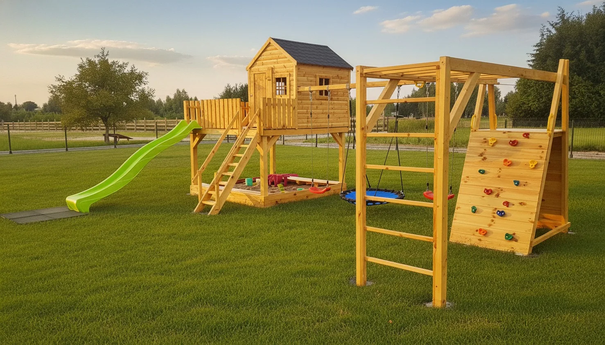
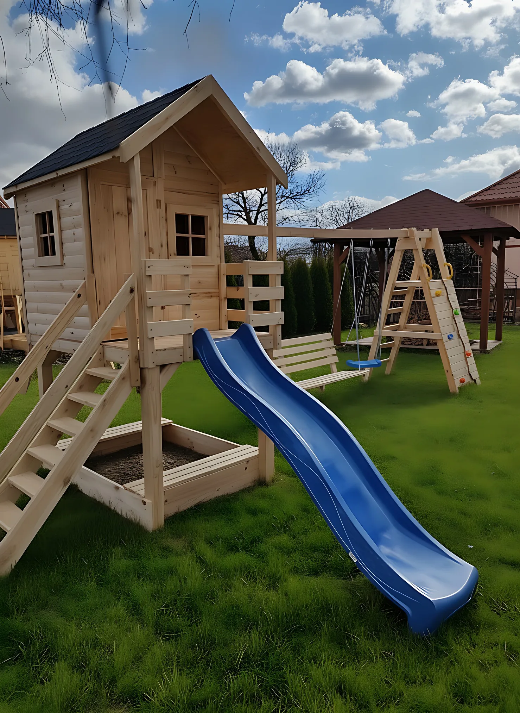
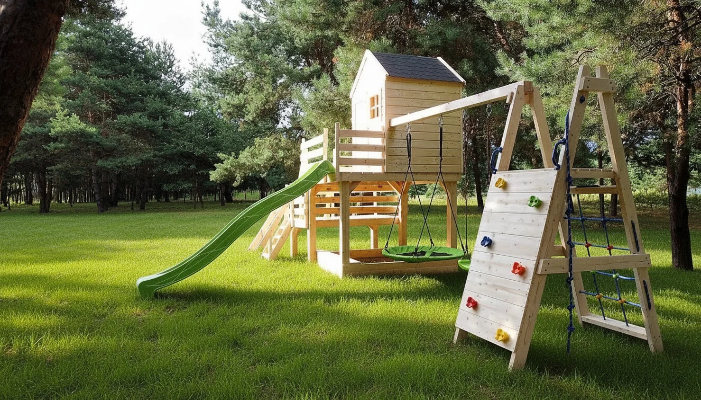
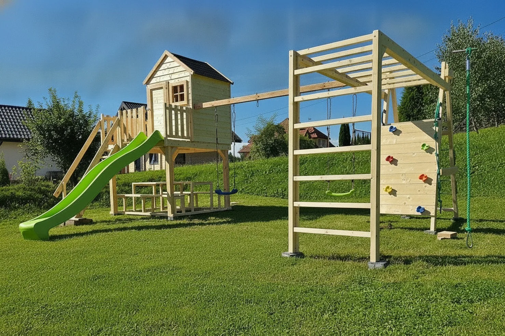

O wykonaniu
Solidna konstrukcja, staranne wykończenie i sprawdzone materiały — żeby dzieci bawiły się beztrosko, a Ty miał spokojną głowę.



Drewno i wykończenie
Do budowy placów zabaw używamy suchego, wyszlifowanego drewna. Wszystkie krawędzie są starannie zaokrąglone, co eliminuje ryzyko zadrapań. Powierzchnia impregnowana jest bezbarwnym środkiem ochronnym, który zachowuje naturalny kolor drewna i chroni je przed warunkami atmosferycznymi.
- Drewno suche i wyszlifowane
- Krawędzie zaokrąglone — bezpieczne dla dzieci
- Impregnacja bezbarwna — naturalny wygląd drewna
Solidna konstrukcja
Nogi domku i belka na huśtawki to masywne elementy 10 × 10 cm. Na ścianach stosujemy deskę elewacyjną pióro-wpust o grubości 2 cm — zapewnia to estetyczny wygląd i odporność na odkształcenia. Całość wieńczy dach kryty gontem.
- Elementy nośne 10 × 10 cm
- Deska elewacyjna 2 cm pióro-wpust
- Dach kryty gontem

Dlaczego drewniany plac zabaw?
Drewno to materiał, który w ogrodzie sprawdza się od pokoleń. Drewniany plac zabaw z domkiem ma kilka przewag nad domkami i zestawami z tworzywa:
- Jest cięższy i sztywniejszy, więc stoi stabilnie nawet wtedy, gdy bawi się na nim kilkoro dzieci naraz.
- Słabo przewodzi ciepło – w upalny dzień drewniane stopnie, poręcze i podłoga tarasu są w dotyku wyraźnie chłodniejsze niż metal.
- Łączy w jednej konstrukcji domek, taras, zjeżdżalnię, huśtawki, wspinaczkę i piaskownicę, a nie tylko sam domek.
- Da się go naprawić: pojedynczą deskę można przeszlifować albo wymienić, a powierzchnię odświeżyć impregnatem lub pomalować na inny kolor.
- Pasuje do ogrodu – naturalny kolor i rysunek słojów dobrze wyglądają wśród zieleni przez cały rok.
- Drewno jest surowcem odnawialnym.
Co daje każdy element wykonania
Wszystkie nasze modele – Standard, Komfort, XXL, XL i Premium – wykonujemy według tych samych zasad. Oto, dlaczego są ważne:
| Element | Jak jest u nas | Co to daje |
|---|---|---|
| Drewno | suche i wyszlifowane | Suche drewno mniej pracuje po zmontowaniu: słabiej się kurczy, paczy i pęka niż drewno mokre, a impregnat lepiej w nie wnika. Szlifowanie wygładza powierzchnię i ogranicza drzazgi. |
| Krawędzie | zaokrąglone | Mniejsze ryzyko otarć i skaleczeń na ostrych kantach podczas zabawy. |
| Nogi i belka huśtawki | przekrój 10 × 10 cm | Gruby przekrój daje sztywną konstrukcję. Belka huśtawki przenosi siły przy każdym bujaniu, więc jej przekrój ma duże znaczenie. |
| Ściany domku | deska elewacyjna 2 cm pióro-wpust | Deski łączone na pióro i wpust tworzą szczelną ścianę bez szpar, która osłania wnętrze domku przed wiatrem. |
| Dach | kryty gontem | Zachodzące na siebie płatki gontu odprowadzają wodę z dachu, a pokrycie jest lekkie i nie obciąża konstrukcji. |
| Impregnacja | bezbarwny impregnat | Zabezpiecza powierzchnię drewna i nie zmienia jego koloru – widać naturalny rysunek słojów. |
| Montaż | domek skręcamy u siebie | Domek jest w całości skręcony, a na miejscu przykręca się tylko schodki, zjeżdżalnię, taras i belkę z huśtawką. Montaż jest wliczony w cenę. |
Belka 10 × 10 cm w liczbach
W wielu zestawach dostępnych na rynku słupy i belki huśtawek mają przekrój od 7 × 7 do 9 × 9 cm. W naszych placach nogi i belka huśtawki mają 10 × 10 cm.
Przekrój 10 × 10 cm to 100 cm² drewna – ponad dwa razy więcej niż 49 cm² w belce 7 × 7 cm. Sztywność belki na zginanie rośnie z czwartą potęgą jej boku, więc belka 10 × 10 cm jest około 4 razy sztywniejsza od belki 7 × 7 cm i około 1,5 raza sztywniejsza od belki 9 × 9 cm. W praktyce oznacza to belkę huśtawki, która mniej się ugina pod bujającymi się dziećmi.
Sęki, żywica i szarzenie – co jest normalne w drewnie
Drewno to materiał naturalny, dlatego każdy plac zabaw wygląda trochę inaczej. Sęki, drobne pęknięcia powierzchniowe i miejscami kropla żywicy to naturalne cechy drewna, a nie wada. Suszenie drewna przed obróbką ogranicza pękanie, ale go całkowicie nie wyklucza.
Bezbarwny impregnat zachowuje naturalny kolor drewna. Jak każde drewno na zewnątrz, z czasem w słońcu delikatnie ciemnieje lub szarzeje. Kolor można odświeżyć albo zmienić lazurą lub farbą do drewna.
Jak dbać o drewniany plac zabaw
Drewniany plac zabaw nie wymaga dużo pracy. Wystarczy kilka prostych czynności:
- Raz na sezon obejrzyj połączenia i śruby, a gdy trzeba – dokręć je.
- Sprawdź liny i siedziska huśtawek. Na zimę siedziska można zdjąć i schować.
- Gdy drewno zaczyna szarzeć albo woda przestaje zbierać się na nim w krople, odśwież powierzchnię impregnatem lub lazurą – zwykle co kilka sezonów.
- Jeśli po latach uniosą się włókna drewna, wystarczy lekko przeszlifować to miejsce.
- Zgarniaj liście i śnieg z dachu i tarasu, a piaskownicę przykrywaj, gdy dzieci się nie bawią.
Specyfikacja materiałowa
| Deska elewacyjna | 2 cm, pióro-wpust |
| Elementy nośne | Nogi i belka 10 × 10 cm |
| Obróbka drewna | Suche, wyszlifowane, krawędzie zaokrąglone |
| Zabezpieczenie | Bezbarwny impregnat |
| Dach | Pokryty gontem |
Masz pytania dotyczące materiałów lub wykonania? Zadzwoń — chętnie odpowiemy.